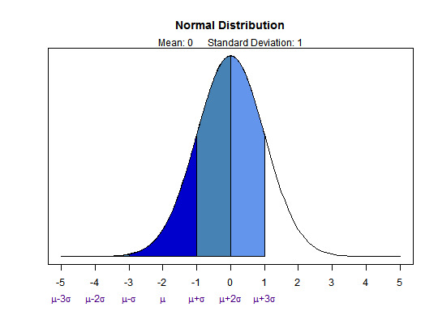
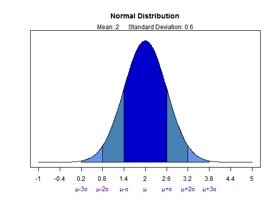
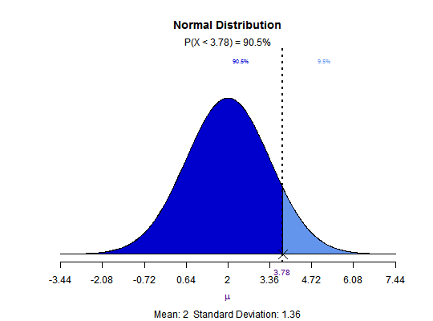
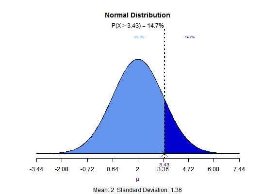
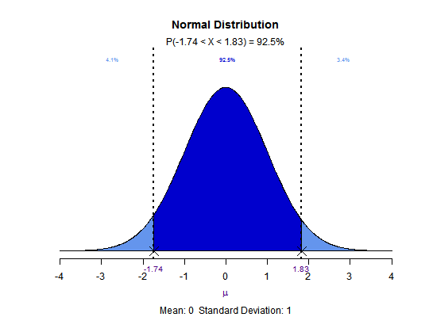
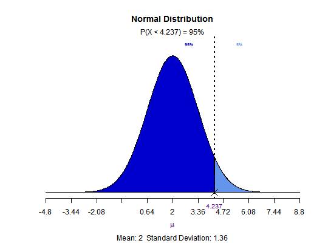
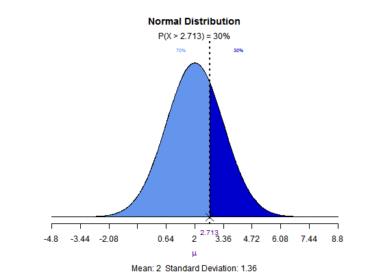
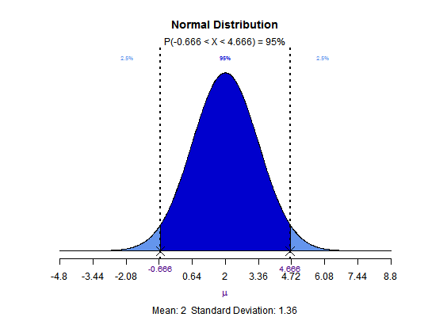

Visualize how changes in mean and standard deviation affect the shape of the normal distribution. compute\/visualize quantiles out of given probability and probability from a given quantile.
norm_plot(mean = 0, sd = 1) norm_per(probs = 0.95, mean = 0, sd = 1, type = c("lower", "upper", "both")) norm_prob(perc, mean = 0, sd = 1, type = c("lower", "upper", "both"))
percentile for the probs based on mean, sd and
type or probability value for perc based on mean,
sd and type
# visualize normal distribution norm_plot()norm_plot(mean = 2, sd = 0.6)# compute\/visualize probability from a given quantile norm_prob(3.78, mean = 2, sd = 1.36)norm_prob(3.43, mean = 2, sd = 1.36, type = 'upper')norm_prob(c(-1.74, 1.83), type = 'both')# compute\/visualize quantiles out of given probability norm_per(0.95, mean = 2, sd = 1.36)norm_per(0.3, mean = 2, sd = 1.36, type = 'upper')norm_per(0.95, mean = 2, sd = 1.36, type = 'both')